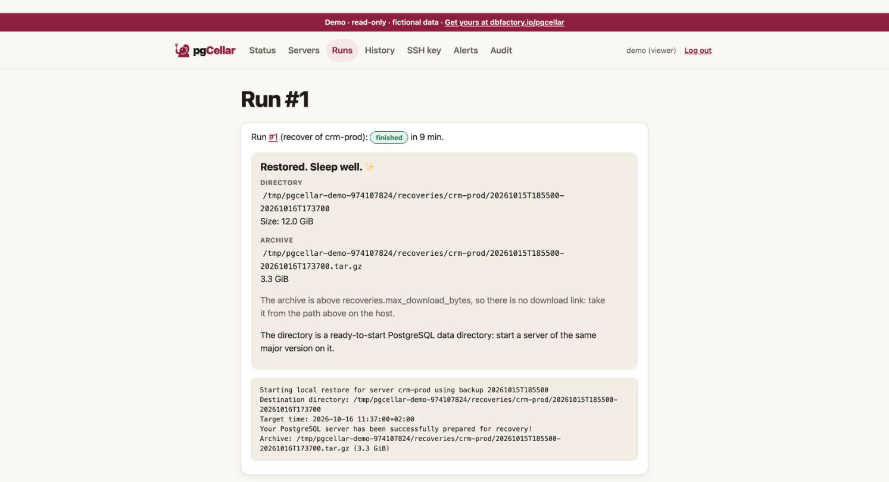

Restores and point-in-time recovery
A restore in pgCellar writes a ready-to-start PostgreSQL data directory from a backup, replaying archived WAL up to the target you choose. Nothing is touched on the production server. The data directory lands in a folder on the pgCellar host. What you do with it next, you decide: inspect it, copy a table out of it, or replace the broken production directory.

Before you restore: read the Timeline
The Timeline section of the server page draws what you can restore to: the full backups, the WAL that links them, the retention window, the holes. Two sentences matter:
- You can go back to: the earliest point in time. It is the end of the oldest backup whose WAL chain is unbroken, segment by segment, up to the newest archived WAL.
- Latest: the last data received when streaming is live, otherwise the arrival time of the last completed WAL file.
A hole in the WAL (a missing segment number between two files of the same timeline) is drawn in red, with the number of files missing. A backup before a hole cannot be used for a target after the hole.
The Timeline is read from Barman's own files, in a few milliseconds. No Barman command runs to draw it. The same data is at GET /api/v1/servers/{name}/timeline.
Starting a restore
On the server page, next to a complete backup, press Restore… (operator role). The Restore page asks for:
| Choice | Meaning |
|---|---|
| Backup | A backup with status DONE. Failed or running backups cannot be restored. |
| Target: Latest possible | Replay all the WAL Barman holds. |
| Target: End of this backup | Stop as soon as the data is consistent. No WAL after that. |
| Target: Point in time | Stop at the date and time you give. |
Also build a .tar.gz I can download |
Packs the directory after the restore. Slower, needs room for a second copy. |
For a point in time, type a date and time. Without a zone it is read in the time zone of the server. With a zone, it is exact:
2026-10-20 14:30:00+02:00
RFC 3339 (2026-10-20T14:30:00+02:00) works too. The target must not be before the end of the chosen backup; the form says so in a sentence. The other way, a target after the last WAL, is not checked: Barman reports the missing WAL.
The "End of this backup" target uses --target-immediate and not a target time equal to the end of the backup. A target time needs a WAL record dated after it, and a quiet database may never produce one.
The same operation from the API (the call returns at once; follow the run):
curl -X POST -H "Authorization: Bearer $KEY" -H "Content-Type: application/json" \
-d '{"backup_id":"20261020T020001","target":"time","target_time":"2026-10-20 14:30:00+02:00","archive":true}' \
http://localhost:8080/api/v1/servers/pg-main/recoveries
The answer is 202 with a run_id. GET /api/v1/runs/{run_id} shows the progress and the Barman output; GET /api/v1/servers/pg-main/recoveries lists the results.
Where the restore goes
<recoveries.dir>/<server>/<backup id>-<timestamp>
for example /var/lib/pgcellar/recoveries/pg-main/20261020T020001-20261020T153012. The default recoveries.dir is /var/lib/pgcellar/recoveries. This folder is inside the container. Map it to the Docker host or you will not be able to read what you restored. In docker-compose.yml, replace the named volume with a bind mount owned by the barman uid:
volumes:
- /srv/pgcellar/recoveries:/var/lib/pgcellar/recoveries
sudo mkdir -p /srv/pgcellar/recoveries && sudo chown 997:997 /srv/pgcellar/recoveries
A restore is as big as the database, so put it on a disk with room. The Storage section counts restores in what it reports.
Rules about that path, which protect your disks: it is always two levels deep under recoveries.dir, built only from a validated server name and a backup id, and checked again before every delete, purge and download. A database row that points elsewhere is refused, not followed.
The .tar.gz
If you ticked the box, pgCellar builds <directory>.tar.gz next to the directory after the restore, streaming (no file loaded in memory), written as .partial and renamed when complete. The Download .tar.gz button (operator role) serves it with byte ranges, so a download can resume.
Limits:
- Above
recoveries.max_download_bytes(2 GiB by default;0= no limit) there is no download link, only the path: read it on the host. - If the restore succeeded but the archive failed, the directory is kept and the run is marked failed with the reason.
- A failed
barman recoverremoves its half-written directory.
Using the restored directory
The result is a PostgreSQL data directory, not a running server. Start a server of the same major version on it:
cd /srv/pgcellar/recoveries/pg-main/20261020T020001-20261020T153012
ls # PG_VERSION, base, pg_wal, postgresql.auto.conf, recovery.signal ...
cat PG_VERSION
Barman wrote the recovery settings (the target) into postgresql.auto.conf and created recovery.signal; the WAL it needs is copied into pg_wal. Start PostgreSQL on that directory, on a free port, and let it replay. When it reaches the target it promotes itself and accepts connections. Typical way to inspect it:
docker run --rm -v "$PWD":/var/lib/postgresql/data -p 55432:5432 postgres:16
Use the image of your own major version, and check that the user in the container owns the files.
To restore over production, stop production, keep the damaged directory aside, put the restored one in its place, fix ownership and permissions, and start. That step is yours: pgCellar deliberately never writes to a production host.
Retention of restores
Restores older than recoveries.keep_days (7 by default; 0 keeps everything) are removed by a daily pass: directory, archive and record. An admin can also delete one by hand (Delete in the Recoveries list, or DELETE /api/v1/recoveries/{id}). Deletion is audited.
Roles: an operator starts a restore and downloads the archive; an admin deletes. A viewer sees the list and the paths but cannot download, because the archive is a full copy of the database and more sensitive than a backup list. Every download, start, delete and purge is audited (recover.start, recovery.download, recovery.delete, recovery.purge).
Limits
- Restore is local:
barman recoverwrites to a folder on the pgCellar host. There is no "restore to a remote host" here. Copy the directory yourself. - One restore per server at a time.
- Only a backup with status DONE can be restored.
- Timeline switches (after a failover) are followed when the history file is present. Without a
.historyfile the fork point is unknown, and the chain is treated as broken. - A backup of an old major version cannot start on a newer PostgreSQL. Use the same major version as the source.
- Restoring does not prove that a whole system works (extensions, configuration files outside the data directory, roles). A restore drill does the next best thing, automatically (chapter 7).